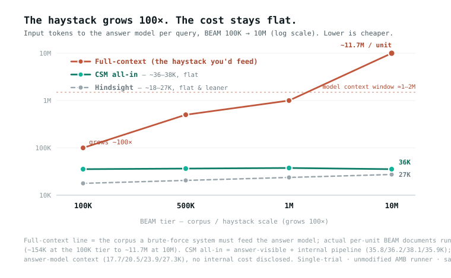

R&D prototype · no official leaderboard placement ·
two certified category leads, cross-reader replicated ·
what that means
The haystack grows 76×. The cost per query stays flat.
Context Swarm Memory (CSM) is open-source agent memory whose retrieval cost per query
stays flat — about 36–38K input tokens all-in (the small, fully-cited
packet the answer model sees, plus CSM's own probe/recall/synthesize calls) — whether the
underlying memory holds 100K or 10M tokens. That is a property of the architecture,
measured across a 76× range — and it is a claim about query cost specifically, since
CSM’s write-time stage has an ingest cost that is not flat. Accuracy is the live
question, and this page reports both the leads that survived falsification and the levers that did not.
36–38Kretrieval input tokens/query, 100K → 10Mflat as the haystack grows 76× · ingest cost is separate
2certified category leadsfull-n, MDE-gated, replicated on a 2nd reader
+0.382500K knowledge_update vs Hindsight37W/6L/27T · MDE 0.173 · +0.326 on reader two
549/549tests passingoffline, no API keys
The flat per-query figure comes from the unmodified public AMB runner across all four
BEAM tiers (their CLI, scoring and judge path), single-trial, on a configuration that had
no write-time stage — today’s default does, and its ingest cost is
disclosed separately. The certified leads come from a
calibrated head-to-head instrument where one reader and one judge serve both arms
and only the retrieved context differs. Numbers from the two instruments are reported separately and
never pooled. CSM has no official leaderboard placement and does not
claim SOTA.
Where this actually stands
No official standing. Two certified leads. A long list of things that failed.
The most useful thing this page can do is tell you exactly which claims are load-bearing and which
are history. CSM has never had a leaderboard placement. Its one upstream submission
was author-closed unmerged on 2026-06-22. What it does have is a cost property
measured across a 100× range, two category-level wins that survived a deliberate falsification
attempt, and a published record of every lever that was measured and died.
1
Flat per-query cost — measured
Per-query input stays at 36–38K tokens whether the per-unit haystack is
154K or 11.7M. A token count does not depend on the prompt or judge, which is why
this is the one figure from the June ladder still worth quoting — with two corrections attached
below.
2
The June ladder's scores — stale twice over
It measured a CSM that no longer exists (before the hybrid router, ID repair, the
batched probe and the fact fold), and the upstream runner has since changed its
prompt, judge and temperature. Pre-change scores cannot be set beside post-change ones, on either side.
3
The settling run is staged and blocked
Config frozen, eight pre-flight blockers found and fixed, launch is one command. Blocked on
API credit and an upstream 10M loader fix — procurement
problems, not engineering ones.
How far today's configuration has moved from the June ladder, on the same 1M queries, re-measured at full category size (n=70)
Measured on a free apples-to-apples instrument: one answer model and one judge serve
both arms, with the same queries and prompts, and the retrieved context is
the only variable. Hindsight's arm is replayed from its own published BEAM contexts, so its
system never has to be re-run. The judge was calibrated before it was trusted — holdout
ρ 0.864 / MAE 0.077 against the official Gemini judge — and it
reproduced the official tie at 100K and loss at 1M.
What “certified” means, stated before the numbers
The delta must exceed its minimum detectable effect (MDE)and its confidence
interval must exclude zero, at n=70 — the entire category, with no further
sampling possible. Both results below were then re-run end to end on a second, independent
reader as a deliberate attempt to break them, and survived. A delta smaller than its MDE is
reported as directional only and is never called a lead. This project retracted a
+0.068 result for failing that bar; the rule is not decorative.
Certified — clears MDE, CI excludes zero, replicated on a second independent reader
Tier
Category
n
CSM
Hindsight
Delta
MDE
W/L/T
Reader 2
500K
knowledge_update
70
0.758
0.376
+0.382
0.173
37/6/27
+0.326
1M
abstention
70
0.679
0.486
+0.193
0.167
23/8/39
+0.185
ρ 0.864judge calibration against the official Gemini judge (MAE 0.077), verified before any claim was made
2 readersboth certified results re-run end to end on an independent second reader and survived
n = 70the whole category — there is no larger sample to draw on this instrument
Directional, and reported as such
At 500K, contradiction_resolution (+0.096, 38W/21L) and preference_following
(+0.075, 18W/10L) are positive at full n and replicate across both readers — and both sit
under their MDE, so neither is claimed as a lead. This is the honest ceiling of an
unpaid instrument: n=70 is already the entire category, and the MDE is set by the reader and judge's
per-query variance, not by sample size. A ~0.09 effect is unresolvable here at maximum n.
Settling it needs the lower-variance official path, which is credit-blocked.
The goal was two certified categories at every tier. It was not met.
500K and 1M each certify one. On the June official ladder 100K led 7 categories and
10M led 4 — but that is a different instrument measuring an older configuration,
so those counts are reported separately and never summed into the total. Stating it any other way
would be an instrument error.
The flat-cost ladder (June 2026, official AMB runner)
Kept because the cost column is still true and still the point. Read the scores as
history: they measured an older CSM, on a runner that has since changed.

Cost — the durable claim, drawn. As the per-unit haystack grows 76× (~154K → ~11.7M tokens), a brute-force full-context system's input explodes past the model's context window, while CSM (~36–38K all-in) and Hindsight (~18–27K, leaner) stay flat. Per-query retrieval cost does not scale with the corpus — ingest cost does.
June 2026 ladder, unmodified AMB runner, same answer/judge models, single-trial. CSM all-in = answer-visible context plus CSM's internal probe/recall/synthesize tokens. Hindsight's column is answer-context only — it discloses no internal-pipeline figure. Neither column includes ingest-time cost. Scores are historical — see Status above.
BEAM tier
CSM score
Hindsight score
CSM answer-ctx
Hindsight answer-ctx
CSM all-in input
100K
0.7367
0.7337
27.0K
17.7K
35.8K
500K
0.6589
0.7112
26.6K
20.5K
36.2K
1M
0.5693
0.7386
28.2K
23.9K
38.1K
10M
0.5616
0.6408
32.5K
27.3K
35.9K
The per-query cost, printed — not left to be added up
CSM's internal pipeline is about 25% of the token count but runs on models roughly
10× cheaper than the answer model, so it is about 7% of the dollars.
We print the sum rather than reporting the halves separately. On the apples-to-apples answer slice
Hindsight is leaner (17.7–27.3K vs 26–33K) — that is a disclosed
trade, not a footnote. Neither column includes either system's ingest-time cost;
CSM's is disclosed below. No gold answers, rubrics or query IDs ever reach retrieval.
“The cost stays flat” is the line this project is most quoted on, so it is worth stating
exactly what it does and does not cover. It is a claim about query cost, and it was
measured on a configuration with no write-time stage. Today’s default config
has one, and its ingest cost is O(corpus). Both halves belong on the same page.
the registry chunks each unit at 100K tokens and reads every chunk
First-ingest cost, amortized over each tier’s query budget. Disk-cached, so re-runs pay nothing.
Tier
Per-unit haystack
Units
First-ingest input
Queries
Amortized/query
100K
~154K
20
~3.1M
400
~7.7K
1M
~800K
35
~28M (≈280 × 100K calls)
700
~40K
10M
~11.7M
—
~117 chunk calls per unit
200
dominates all query spend
~40K1M-tier ingest, amortized per query — roughly the same order as the entire per-query retrieval spend for that run
one-timedisk-cached by split|user|model|promptVersion; re-runs pay nothing, and it runs on the cheap model tier
~34–36Kthe likely per-query figure today, since the now-default batched probe cuts internal input ~21% — projected, not measured
Why this repo stopped saying its accounting was “the complete one”
In a real deployment memory arrives incrementally, so facts are extracted per turn as it lands —
the whole-corpus read is a backfill, not a recurring cost. That is the honest defense
of the ingest number above. It is also precisely Hindsight’s defense. Earlier
versions of this page argued that because Hindsight distills at ingest and discloses no internal
figure, CSM’s accounting was the complete one. CSM now distills at ingest too, so that comparison
was no longer true and has been removed. Both systems have an ingest cost; CSM’s is on this page,
Hindsight’s is not. That, and only that, is the difference worth stating.
Memory is a swarm of bounded, immutable shards behind a read-only manifest. CSM spends context
only after a zero-LLM router finds plausible shards; the answer arrives as one compact, cited packet.
01
Router
Hybrid lexical + local-embedding scorer over the shard directory. No LLM call, no vector DB required at index time. The router reports when a ranking is degenerate rather than returning a confident-looking arbitrary order.
02
Probe
One batched relevance pass over the candidate shards — “is this memory worth recalling from?” Every shard still gets its own verdict; batching the question cut internal input tokens 21% with no score change.
03
Recall
Structured, citation-bearing extraction from only the shards that passed the probe.
04
Synthesize
Merge, dedupe, flag conflicts — emit a compact MemoryPacket for the agent.
→
MemoryPacket
Answer + key claims, every line cited to shard, snapshot, and event IDs.
Read path: branch-and-discard
ask() never appends events, writes snapshots, or mutates the chronicle.
Enforced in CI by SHA-256 file hashes (tests/mutationSafety.test.ts).
Write path: Committer-gated
Durable memory changes only through appendEventAndSnapshot or an explicit
Committer decision. Snapshots are immutable and versioned; the storage layer refuses overwrites.
Indexing: zero LLM cost
Routing is lexical plus a local all-MiniLM-L6-v2 embedding leg —
no LLM-generated index is ever built, so adding memory costs no API tokens.
Coverage chronicle, deterministic
Summary/ordering/temporal queries get a date-ordered, fully-cited timeline assembled without
extra LLM calls. Date arithmetic is computed, never delegated to the model.
Unknown config is an error, never a default
Every CSM_* read goes through one module that throws on a value it
does not recognise. The rule exists because a silent fallback once let
CSM_ROUTER_HYBRID=off turn the router on for weeks.
Write-time artifacts fold, never append
Distilled facts fold into the evidence capsule rather than adding another document to the
return set. Displacement — pushing real evidence out to make room — measured
fatal four separate times before the rule was made structural.
Everything that was measured and died — published at full weight.
This section is the point, not an appendix. A memory system that only publishes its wins is
indistinguishable from one that never checked. Every entry below cost real money to discover and
is documented in the repo with its artifacts, its statistics, and the rule it forced.
R
The +0.068 displacement result — retracted
The winning arm was graded on a context that could not be reproduced byte-for-byte: the capsule had
rendered as a placeholder string. Rule adopted: never grade an arm on a context you
cannot re-render. Synthesized text is now persisted per run.
F1
The coverage proxy is anti-correlated
A reranker gained +11.6 on retrieval coverage and lost answers on
event_ordering (4W/13L, p=0.049). Order-changing levers are now gated on the answer
metric only — a proxy that moves the wrong way is worse than no proxy.
F2
Component gains vanish in assembly
A router component benchmark predicted +0.24; the assembled system delivered
−0.12. Rule adopted: benchmark the unit production
conserves, not the unit that is convenient to isolate.
F3
Levers do not transfer across tiers
The needle net worked at 500K and did not replicate at 1M. Lean-return K=16 shipped and was reverted
the same day for a 500K information_extraction regression. Every default flip now
requires cross-tier evidence.
F4
Gemini context caching — falsified
A projected 40–60% cost cut died on a measured 4,096-token
implicit-cache floor: every CSM call sits below it, so the pipeline gets exactly zero caching. The
observability shipped anyway and surfaced ~$2.00/run of previously invisible thinking spend.
F5
Cheapening the witness fails
A local pre-gate that skipped witnesses before the LLM saw them lost knowledge_update
across a 3-point dose-response and was killed. Cheapening the question worked instead: the
batched probe keeps every witness at −21% input tokens, score-neutral, and shipped.
The method rules these failures forced
n=25 is a pointer, not a verdict — abstention read +0.040 at n=25
and +0.193 at n=70, and the re-measurement noise at n=25 is ±0.05, the size of most “leads”.
Re-measure the same arm before believing a delta — re-scoring identical contexts
moved one arm 0.06, which is how a retracted lead was caught.
A delta below its MDE is not an effect, stated at birth and never softened afterwards.
And Mem0 and HippoRAG are documented as blocked, not beaten: they could not be run on
available hardware, which is a gap in the evidence, never a win.
What did work, and is on by default
The certified configuration. The official re-run uses code defaults; tests/env.test.ts pins the decisive ones so a silent flip is a test failure.
Lever
Default
Evidence
Hybrid router + descriptors
ON
+0.365 answer at 1M, 26W/5L — the strongest single effect measured on this project
ID repair
ON
~0.20
Batched probe (hosted)
ON
−21% internal input tokens, score-neutral
Fact fold (write-time registry)
ON
500K knowledge_update certified on two readers; 1M paired +0.114 with CI above zero; token-neutral at answer time
Preference profile
OFF
composed with the fold it measured −0.036 (4W/9L) versus the fold alone
These mirror the structured FAQ data in the page head, so humans and answer engines quote the same hedged claims — including the ones that are unflattering.
Does CSM beat Hindsight on BEAM?
Not overall — and the honest answer has two halves. On the June 2026 official-runner ladder
CSM led only at 100K (0.7367 vs 0.7337, inside single-trial noise) and trailed at 500K/1M/10M.
That ladder is now stale twice over: it measured a configuration that no longer exists, and the
upstream runner has since changed its prompt, judge and temperature, so pre-change scores are not
comparable to post-change ones on either side. On a calibrated head-to-head instrument
with today's configuration, CSM holds two certified category-level leads, each
replicated on a second independent reader: knowledge_update at 500K
(+0.382) and abstention at 1M (+0.193). Two
categories is not the whole benchmark.
Is this an official leaderboard claim?
No. CSM has no official leaderboard placement and has never had one. The single
upstream submission
(vectorize-io/agent-memory-benchmark#19)
was author-closed on 2026-06-22, unmerged. A future submission would be a new PR
against the post-#20 runner, with the comparison system re-scored on the same pinned commit.
Nothing here is claimed as state of the art.
What does “certified” mean?
A pre-registered statistical bar: the delta exceeds its minimum detectable effect (MDE)and its confidence interval excludes zero, at n=70 — the entire
category, with no further sampling possible. Both certified results were then re-run end to end on a
second, independent reader as a deliberate falsification attempt, and survived. A
delta below its MDE is reported as directional only and never called a lead. This project retracted
a +0.068 result for failing that bar.
Why not just run the official benchmark again?
It is fully staged — frozen config, eight pre-flight blockers found and fixed, launch is one
command — and blocked on two things outside the code: API credit
(est. $200–300 for three tiers) and an upstream 10M loader fix. The free
instrument was built precisely so that measurement did not stop while that blocker stood, but it
cannot substitute for the official path: a ~0.09 effect is below its resolving power even at
maximum sample size.
Did CSM use gold answers or hardcoded benchmark logic?
No. Retrieval receives only the ingested documents, the query, user id, and timestamp — no
gold answers, rubrics, or query IDs. There is no benchmark-specific vocabulary in the retrieval
path, and an import-graph leakage-firewall test enforces that boundary in CI.
What is Context Swarm Memory?
An open-source LLM memory system that treats memory as bounded, immutable, read-only shards.
A Memory Manager routes a query to candidate shards, probes them cheaply, recalls from only the
useful ones, and synthesizes a compact answer cited to shard, snapshot, and event IDs. Querying
memory never mutates it; durable changes go through an explicit Committer protocol.
What is the honest tradeoff versus Hindsight?
On the apples-to-apples answer-context slice Hindsight is leaner (17.7–27.3K
vs CSM's 26–33K). CSM publishes a per-query all-in figure instead —
~36–38K input tokens — which adds its own probe/recall/synthesize calls to the answer
packet; Hindsight discloses no internal figure, so the two all-in numbers are not directly
comparable. CSM's internal tokens run on models ~10× cheaper: ~25% of the token count, ~7% of
the dollars. Neither figure includes ingest-time cost, and both systems now distill at
ingest — CSM's ingest cost is disclosed, Hindsight's is not.
What has failed in this project?
A +0.068 displacement result was retracted as a harness artifact. A coverage
reranker gained +11.6 on its proxy and lost answers. A router component benchmark predicted
+0.24 and the assembled system gave −0.12. A projected 40–60% caching saving was
falsified by a 4,096-token cache floor. Several levers worked at one corpus size and did not
replicate at another. Mem0 and HippoRAG could not be run on available hardware and are recorded as
blocked, not beaten. The full list is in
the falsification record.
Reproducibility
Don’t trust the page. Run the verifier.
The test suite runs offline against a deterministic mock provider — no API keys.
The published-evidence verifier hashes the committed result rows and recomputes the
headline counts, citation F1, and McNemar checks from results.jsonl.
Hindsight's side of every comparison re-derives from its own published artifacts, so
you never have to take our word for the other arm either.